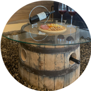
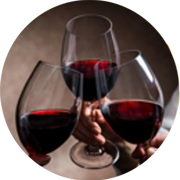

Produto
-

NEW FOREST
Nosso primeiro produto é uma mesa de centro que funciona como adega de rápido consumo. De forma prática, o produto comporta até quatro unidades de garrafas de vinho ou champanhe. A mesa é produzida a partir de um barril de carvalho e seu tampo é de vidro.
-

CONSIDERAÇÕES
O produto, belo e sofisticado, agrada os consumidores de vinhos pelo design prático e inovador. É um móvel exclusivo e pode ser utilizado em ambientes internos e externos como peça decorativa.